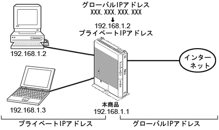

| IPマスカレード |
IPマスカレードとは、1つのグローバルIPアドレスを利用して、LAN内のプライベートIPアドレスを持つ複数のパソコンをインターネットに接続できる機能です。
IPマスカレードの場合は、WAN側からLAN側のパソコンのいずれかを指定してアクセスを開始することはできません。
WAN側からのアクセスを行いたい場合や特定のアプリケーション(ポート番号)をLAN側の特定アドレスに割り当てる場合は、「静的IPマスカレード」や「簡易DMZ機能」により設定を行ってください。 |
|
|
| ■ IP(Internet Protocol)アドレス |
IPアドレスとは、ネットワーク上でパソコンを識別する番号のことです。
この番号によって通信先の相手を特定できます。
"192.168.1.1"のようにピリオドをはさんだ4つの数字で表します。 |
|  | |
|
|
↑ページのトップへ |